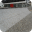
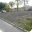

Favoritos Ver todos  Wallride da FGP Sael Lopes Borda de valores Luíza Sampaio Wallride do Rebouças Júlia Fonseca Segundo setor da Praça Mauá Raphael Gibson  Borda de valores João ZMS Wallride do Camerino Ricardo